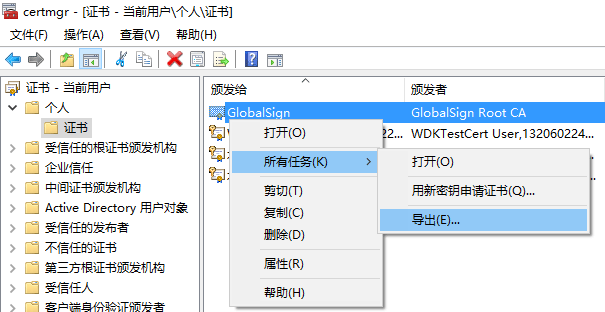
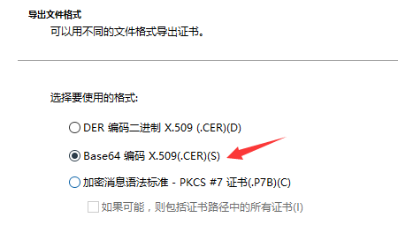

前言
在上一篇文章中写的XP中安装 NDIS5 的方法，但是在WIN7中已经无法对 硬件签名检测 进行配置，
经过实验，在我们拥有正统签名的情况下，可以把签名导入到 受信任的发布者 中，再安装 NDIS6 时，
就不会再提示警告信息，但是如果在证书过期后再安装，就仍然会提示警告信息。
证书提取
这里以 netlwf.inf ndislwf.sys 两个文件为例，首先给sys驱动文件进行签名，然后使用签完名的
sys文件和inf文件生成cat文件，一般情况下签名工具提供生成cat文件的功能，最后把这个cat文件也按照
驱动签名的方式进行签名，注意cat文件只能签 SHA1 格式的签名。
我们可以先在cat文件上 右键->属性->数字签名 中查看证书，并使用 证书导入向导，把证书导入到某位置。
然后在运行中输入 certmgr.msc 打开 证书管理器 ，在需要导出的证书上 右键->所有任务->导出 来使用证书导出向导 进行导出

注意导出证书选择 Base64 编码 X.509(.CER) 格式

导出的证书可以使用记事本打开，格式大致如下
1 | -----BEGIN CERTIFICATE----- |
代码导入证书
读取证书信息的函数
1 | CString GetCertInfo(IN CString &csCertPath) |
导入证书的函数
1 | BOOL CACertInstall(IN CString csCertPath, IN CStringW csInfPath) |
安装网络组件
这里安装 NDIS6 只需要处理一个inf文件
1 | BOOL InstallNetServiceVista(IN CStringW csInfPath) |
卸载的代码与上一篇文章相同。